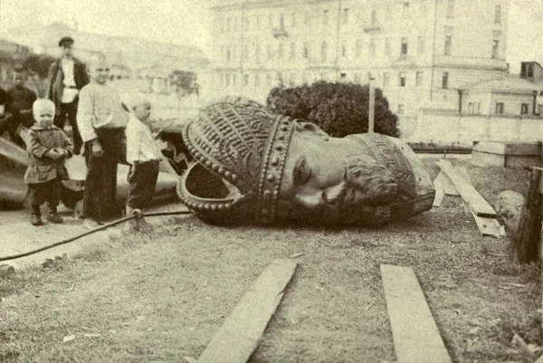
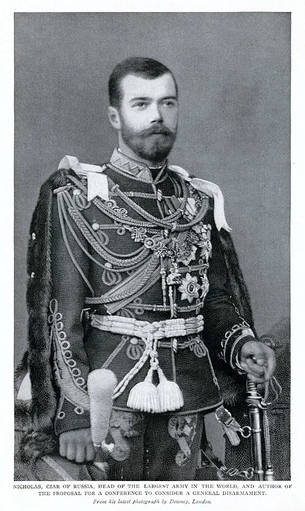
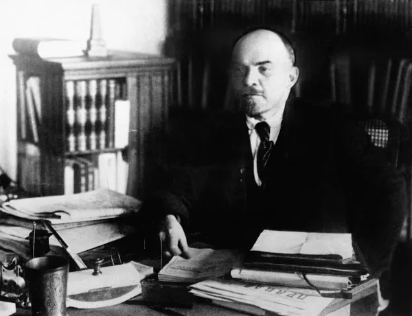

A Revolução Russa, considerada um dos maiores acontecimentos do século XX, vai além do fim do czarismo. Seu legado esteve presente em diversos fatos históricos posteriores.
A Revolução Russa foi a concretização de uma série de revoltas pelas quais a Rússia passava desde 1905 e que tiveram várias consequências, como o fim do czarismo (monarquia) e a tomada de poder pelos socialistas.
Naquele contexto, a Rússia poderia ser chamada de atrasada, pois, em pleno XX, preservava práticas ainda feudais, era agrária e dominada por czares (imperadores). As primeiras revoltas, que antecederam a revolução, foram contra os privilégios da nobreza e clero, mas também contra gastos de guerra (contra o Japão, batalha que a Rússia perdeu).
Vemos as consequências da Revolução Russa como fato histórico até, no mínimo, 1989, com a queda do Muro de Berlim, já que a União das Repúblicas Socialistas Soviéticas (URSS), formada depois da revolução, existiu até a década de 1990 e, em anos anteriores, confrontou os EUA, dividindo o mundo entre socialistas e capitalistas na Guerra Fria.
Resumo sobre a Revolução Russa
A Revolução Russa data de 1917, mas pelo menos desde 1905 existiam manifestações no país que culminaram na tomada do poder pelos sovietes.
A Rússia antes da revolução era agrária, “feudal”, dominada por clero (Igreja Ortodoxa), nobreza e czares (imperadores).
A população se revoltou contra essas camadas sociais que tinham privilégios sociais enquanto passava fome.
Somou-se a isso a perda da guerra para o Japão, em 1905. Diante dos grandes gastos bélicos, a população continuava à míngua. Assim, aconteceu a Revolução de 1905.
A população revoltosa estava organizada no Partido Operário Social-Democrata, que, por sua vez, era dividido entre mencheviques e bolcheviques (minoria e maioria, respectivamente). Uns pensavam que deveriam acontecer reformas burguesas antes da revolução, e outros queriam a revolução proletária prontamente.
Em 1914, na I Guerra Mundial, a Rússia esteve na Tríplice Entente, junto da Inglaterra e França, porém, perdeu importantes batalhas.
Em fevereiro de 1917, após grandes rebeliões, aconteceu a renúncia do czar, que assumiu um governo provisório.
Em outubro de 1917, os bolcheviques realizaram a tomada do Palácio de Inverno, e aconteceu a Revolução Russa, de fato, tendo Lenin como primeiro governante.
Várias medidas foram adotadas na economia. A Rússia também se retirou da I Guerra Mundial, porém, os opositores da revolução organizam um exército, e ocorreu uma guerra civil na Rússia.
Após a guerra civil, visando à unificação e coesão, foi formada a União das Repúblicas Socialistas Soviéticas (URSS), que perdurou até 1991, porém, já com ideais muito diferentes dos revolucionários de 1917.
Videoaula sobre a Revolução Russa
Antecedentes históricos da Revolução Russa"
"A Rússia no início do século XX era o que o restante da Europa poderia considerar “atrasada”, já que era majoritariamente rural, e seus poderes, ainda divididos quase como na Idade Média: entre nobreza (no caso, proprietários rurais) e clero (nesse caso, a Igreja Ortodoxa).
Foram vãs as tentativas, ainda no século XVIII, do czar Pedro, O Grande de modernizar o país, que adotou novos modelos de educação e administração, transferiu a capital de Moscou para São Petersburgo para torná-la uma “janela para a Europa” — enfim, ele desejou ocidentalizar a Rússia. Somente em meados de XIX começaram os primeiros movimentos no sentido da industrialização e modernização, que sempre se chocavam com a estagnação rural comandada pelos grandes proprietários de terra, chamados boiardos.
A Rússia era governada pelos czares (o mesmo que “imperadores”). Lá, uma mesma dinastia estava no poder desde 1613: os Romanov. A burguesia, vendo o que acontecia na Europa, almejava o mesmo: industrializar-se para também obter dividendos e não continuar servindo ao Estado, como sempre fora.
Os últimos czares antes da revolução começaram a se preocupar com a modernização russa, mas já era tarde demais. Alexandre II aboliu a servidão e eliminou dívidas, mesmo assim, acabou assassinado por revolucionários. Alexandre III, seu herdeiro, reprimiu anarquistas e marxistas e, finalmente, conseguiu impulsionar a indústria, porém, com capital francês, inglês, belga e alemão.
A Rússia passou a ter, então, por um lado, alguns elementos modernos e, por outro, a oligarquia agrária. Nicolau II, o último czar, não fugindo à tradição (que também incomodava o povo: os altíssimos gastos em guerras), disputou e desta vez perdeu a Guerra Russo-Japonesa (1904-1905).
Mencheviques e bolcheviques
Como vimos, os czares tinham muitos opositores. Entre esses, alguns se organizaram por seus ideais políticos, como os niilistas (anarquistas defensores das ideias de Bakunin), socialdemocratas (acreditavam na social-democracia, mas não como é hoje, já que incorporavam alguns ideais marxistas), narodnikis (a tradução literal é “ir ao povo”, logo, eram populistas) e os que mais se destacaram: os mencheviques e os bolcheviques.
Esse destaque veio com o Congresso do Partido Socialdemocrata (POSDR), em 1903, que dividiu ambos em lados diferentes de acordo com o que pensavam sobre o desenvolvimento da Rússia.
Mencheviques: eram os minoritários. Achavam que primeiramente seria necessário que o capitalismo russo se desenvolvesse para depois lutarem pelo socialismo. Para isso, eram necessárias reformas progressistas, feitas na Duma (Parlamento), que seriam lideradas pela burguesia (Revolução Burguesa) contra o czarismo.
Bolcheviques: eram majoritários. Defendiam que a Revolução Socialista ocorresse de forma imediata, com a instalação da Ditadura do Proletariado e a aliança entre operários e camponeses. Seu líder era Lenin e tinham o apoio dos sovietes, conselho de trabalhadores e soldados que, a partir da Revolução de 1905, obteve poderes executivos e legislativos, com representantes advindos de quartéis e fábricas.
Revolução de 1905
A Revolução de 1905 foi, na verdade, uma série de movimentos da população russa, faminta, contrária às medidas czaristas, à crise econômica que enfrentava e à participação da Rússia em uma guerra contra o Japão, que gerou enormes gastos bélicos.
A Guerra Russo-Japonesa foi uma disputa imperialista (ou seja, por mais terras) da Rússia e do Japão pela Crimeia e a Manchúria. O estrondoso fracasso do czar estimulou as forças de oposição, que, como vimos, já eram muitas.
Nicolau II, percebendo tal movimentação, passou a conter, com muita violência, atos que seriam até então pacíficos. Como foi o caso do que depois ficou conhecido como “Domingo Sangrento”, quando pessoas, mesmo cantando o hino “Deus salve o czar”, foram exterminadas, apenas por apresentarem, também, algumas queixas.
Com isso, Nicolau II caiu mais ainda em descrédito e se viu obrigado a assinar o Tratado de Portsmouth, que acabou com a guerra, em 5 de setembro de 1905, entregando ao Japão partes importantes de seu território — entre eles, a Coreia.
Os sovietes foram criados nesse contexto, quando o czar lançou o Manifesto de Outubro, em que prometia uma monarquia constitucional e parlamentar. Assim, não só os sovietes passaram a existir, como também a Duma (Parlamento, também já mencionado). O problema era que Nicolau II não largaria o poder tão facilmente e lançou decretos que o colocavam acima da Duma.
Parlamentares não satisfeitos protestaram, ao passo que o czar dissolveu a instituição, colocando em seu lugar outro Parlamento, agora censitário, ou seja, com base em quem tinha posses. Esse sistema perdurou até 1911, sob a liderança de Stolypin, que, mais tarde naquele ano, foi assassinado por forças opositoras
Todo esse período, desde 1905, é considerado por alguns como um “ensaio da Revolução Russa.
Quais as causas da Revolução Russa?
A Rússia seguia, como vimos, um modo de produção bastante atrasado. Era majoritariamente rural e se encontrava em um regime ainda feudal. As tentativas de industrialização, ao longo da história, várias vezes não deram certo, o que fez com que a aristocracia, ou seja, os nobres, concentrasse toda a riqueza, enquanto o restante do povo vivia na miséria e na fome.
Com o tempo, várias ideias contrárias à monarquia absolutista foram surgindo, algumas delas revolucionárias, como as dos mencheviques e bolcheviques, por exemplo. Essas ideias ganharam adesão junto ao povo que passava fome.
As repressões do czar, como a do Domingo Sangrento, foram o estopim para a Revolução de 1917.
Estouro da Revolução Russa
O que chamamos de Revolução Russa, de fato, foi o estopim, ou seja, a tomada de poder pelos sovietes, em outubro de 1917, que vinham se organizando com a população desde pelo menos 1905, em protesto contra os czares e seus privilégios, a fome e a repressão.
Assim como a Guerra contra o Japão foi um gatilho em 1905, a partir de 1914, a Primeira Guerra Mundial também mexeu com a conjuntura interna russa — sendo inclusive apontada por muitos como um dos motivos da revolução —, pois a Rússia fez parte da Tríplice Entente (junto da Inglaterra e França) e, como era um país atrasado, não possuía os mesmos meios tecnológicos das demais nações, o que fez com que perdesse diversas batalhas, inclusive algumas importantíssimas para a Alemanha, que conquistou parte de seu território.
Como sabemos, a I Guerra Mundial teve objetivos imperialistas e, no que tange especialmente a Rússia, havia o temor da ascensão alemã e invasão de territórios, pois ela havia passado recentemente por unificação e ameaçava outras nações.
O fim do czarismo estava próximo, com os problemas econômicos, a repressão e, agora, mais uma derrota militar, e aconteceu em fevereiro de 1917, como veremos a seguir.
Revolução de Fevereiro (Revolução Branca)
Em fevereiro de 1917, o czar abdicou de todo o seu poder, após tantos problemas, como crise econômica, derrotas em batalhas importantes e reiteradas manifestações da população durante anos. Assumiu, então, o Governo Provisório, que funcionou como um Parlamento liberal europeu.
À frente desse governo estava Alexander Kerenski, que era socialista, porém, reformista (menchevique, como vimos). Esse período é chamado de República da Duma, Revolução de Fevereiro, Revolução Branca ou ainda Revolução Menchevique.
Entretanto, a Rússia não tinha saído da guerra, e as pessoas ainda passavam fome, logo, seriam necessárias outras mudanças. Com isso, a oposição bolchevique se fortaleceu nos sovietes. Liderada por Lenin e Trotsky, sob o lema “pão, paz e terra”, indicava, além da saída da guerra, a redistribuição (expropriação e divisão) das grandes propriedades de terra, a fim de ajustar o fornecimento interno de comida para a população.
Paralelamente, a Guarda Vermelha ia sendo formada por Trotsky. Posteriormente, essa guarda passou a se chamar Exército Vermelho, pós-revolução. Até então, ela era um grupo revolucionário e armado dos bolcheviques, que visava à tomada do poder.
Revolução de Outubro (Revolução Vermelha)
Em 7 de novembro de 1917 ou 25 de outubro no calendário juliano (que a Rússia ainda usava), os Bolcheviques tomaram o Palácio de Inverno, bombardeando-o, e depois todos os outros prédios públicos russos, que passaram a ser chamados de Conselhos de Comissários do Povo.
Kerensky, menchevique que estava à frente do Governo Provisório, fugiu, e assim teve início o governo bolchevique, cuja primeira publicação oficial foi o “Apelo aos trabalhadores e camponeses”, de Lenin, primeiro governante revolucionário. Por meio dela, foi dado “todo o poder aos sovietes”. Uma das primeiras medidas foi também retirar o país da I Guerra Mundial.
Quais as consequências da Revolução Russa?
A Revolução Russa não é um fato histórico que possa ser explicado apenas pela sucessão de acontecimentos, pois vemos suas consequências até, no mínimo, 1989, com a queda do Muro de Berlim ou, para alguns, até hoje.
Mas, se quisermos considerar as consequências imediatas, temos:
Nacionalização de todas as indústrias e bancos russos;
Saída da guerra, com a perda de territórios como a Letônia, Lituânia, Estônia, Finlândia, Ucrânia e Polônia;
Redistribuição das terras no campo;
Guerra Civil Russa
Claro que tantas mudanças assim não agradaram a todos. Dessa forma, houve a oposição ao governo de Lenin, formada por antigas forças czaristas e mencheviques, que se uniram também aos países que não aceitaram a saída russa da guerra. Esses contrarrevolucionários se organizaram com armas no Exército Branco (em contraposição ao Vermelho) e promoveram uma verdadeira guerra civil, em 1918, que durou até 1921, quando os bolcheviques, mais uma vez, saíram vitoriosos.
A saída da Rússia da guerra só foi possível por meio da assinatura de um acordo com a Alemanha, chamado Tratado Brest-Litovsk. Os opositores acreditavam que essa aliança havia prejudicado muito os russos, que perderam territórios e reservas de carvão. Por outro lado, Trotsky, comandante do Exército Vermelho, percebia o quanto este estava enfraquecido para mais batalhas. Lenin, por sua vez, entendia que a guerra era impopular entre o povo desde o começo.
Além dos dois exércitos internos, soldados estrangeiros invadiram a Rússia, almejando ajudar a restaurar a monarquia e instabilizar os bolcheviques. Ao longo de três anos, muitos foram mortos em batalhas — estima-se que de quatro a dez milhões de pessoas. Os opositores se enfraqueceram após a vitória final bolchevique, em 1921.
A União das Repúblicas Socialistas Soviéticas (URSS) foi criada após a Guerra Civil Russa, em 1922, como forma de reunificar o país e outras nações após tantos confrontos.